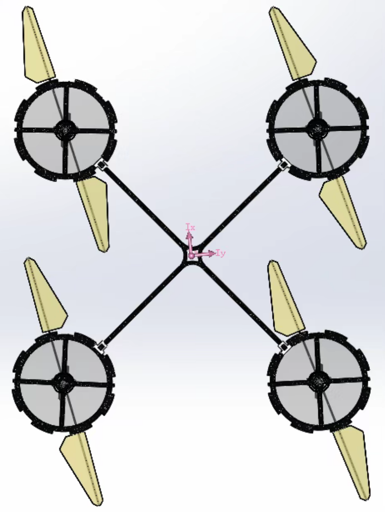

Research portfolio Tsinghua University
ZilinChen.
陈子林 / Robotics & Control Researcher
I build intelligent machines that move with precision—connecting control theory, motion planning, simulation, and real-world robotic systems.


Research portfolio Tsinghua University
陈子林 / Robotics & Control Researcher
I build intelligent machines that move with precision—connecting control theory, motion planning, simulation, and real-world robotic systems.
